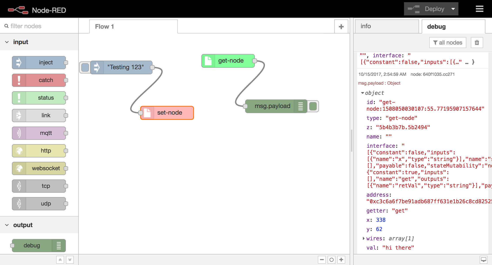

Chris Hajduk
I have compiled some of my projects and work, with more detail and information than is available on my résumé. Feel free to browse through some of the demos and content available below.
VivaSpire
A Portable Oxygen Concentrator was developed for COPD patients capable of delivering upto 1L/min at 96% purity
- Touchscreen interface controlling oxygen output
- Oxygen is separated from the air through temperature swings; Hot temperatures release oxygen, cold temperatures absorb it
- Flow, oxygen, pressure and temperature sensors regulated the controlled release of oxygen from the filter
- The oxygen filter was a chemical compound that works similarly to hemoglobin (in the blood). It has a metal center which attracts the oxygen within a synthetic organic "ring" used to stabilize the reaction.
- To see the electronics, which contain all the sensors and I/O to control the device: Available Here
{kind=link}

WARG
A custom drone was built to survey large crop areas and deploy soil sensors at specific locations. The electronics and software featured full autonomy, with redundant back ups. In case of a software or power failure, a secondary processor is capable of maintaining stable flight until a pilot takes over. Automated path configuration was closely coupled with the computer vision system responsible for live processing of video and automated target detection and geolocation. Once a suitable target is detected, the soil probe is dropped in the target location. The limiting factor of the design was the 2.5km maximum radial distance determined by the strength of data and video link signals (hobbyist radio frequencies were used).
See my work in action:Autopilot code: https://github.com/UWARG/PICpilot (see commits before June 2016 for my contributions)
Computer vision code: https://github.com/UWARG/computer-vision
ResearchSub
A categorization system for new research publications to enable enthusiasts to stay upto date in each field. Two different styles were tested as shown above (one as a research network [see left image below], one as predefined category groups [see right image below]).
- Developed in Django/Python and deployed on AWS
- Pulls information from the CrossRef API, requires human input to categorize each paper into a category (for now)
- Clicking on each category allows one to narrow the field of interest and be aware of any major updates in any specific field of science
Mars1000
A study on the requirements for a self-sustainable and economically viable Martian colony, designed to support 1000 colonists.
- A colony of this magnitude would require upwards of an $8.5B of investment, with the most likely return on investment from mining operations (where mining can happen deeper due to lower gravity)
- The colony would require 86,480 kWh of electricity per day, 50% for food and 46% for fuel production (rockets or rovers)
- 185m3 of water would be used daily, 78% used for food production
- A single return shipment of gold would fund the entire colony’s investment.
Eth-Red
Node-Red provides a visual interface for connecting IOT devices together. This is an add-on which allows IOT devices to interact with the blockchain. An Ethereum/Web3 interface was developed for Node-RED. It uses Ethereum smart contracts as an input or output from IOT devices.
Fightcraft
Fightcraft is a video game designed to copy the mechanics and functionality of Minecraft in its early stages. The features and functionality are very similar to the pre-alpha version of Minecraft. The game was built in Java using OpenGL with a custom game engine. The game was built to utilize three dimensional drawing methods with hardware acceleration through GLSL.
A demo of the project can be seen below, or you can download the game (no installation required)
Patents
-
PCT Patent Pending - "Systems, Apparatus and Methods for Separating Oxygen from Air"
Awards
-
1st
Place - University of Waterloo - Nanotechnology Engineering Capstone Symposium
2017 Winner
-
Palihapitiya/Lau Venture Creation Fund
2017 Recipient
-
Velocity Fund Final $5K & $25K Finalist and Winner
2016/2017
-
Norman Esch Capstone Award
2017